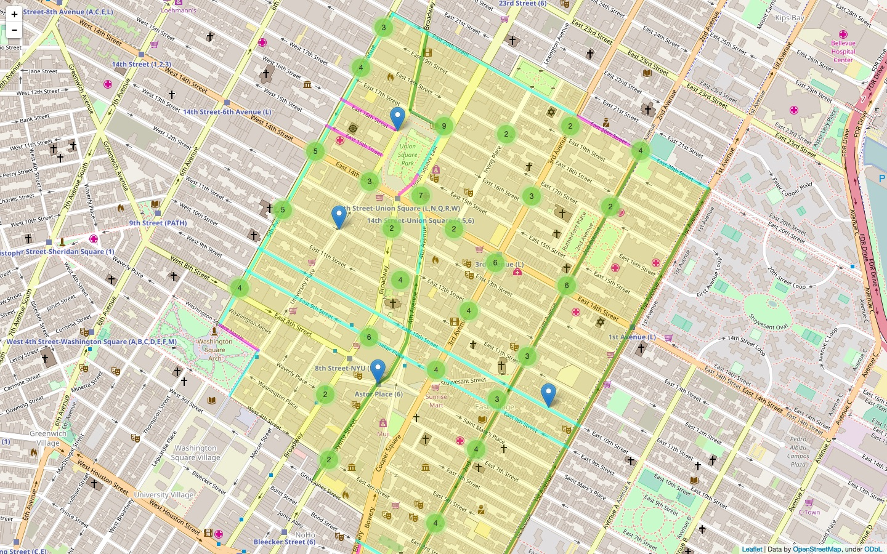

Evaluating the Effectiveness of Bike Lanes in NYC
Click here to find the GitHub repository for this projectAbout this project
Course Macaulay Honors College Seminar 4: Shaping the Future of New York—cross-campus section
Project codename Team Kevin
Members AJ Chico (Queens), Kenneth Decastillo (Lehman), Richard Lu (Hunter), Daisy Tetecatl (Lehman)
Instructor Katherine St. John (Lehman)
ITF Kevin Ambrose
Project overview
There's no doubt that cycling is growing in New York City—from the growth of programs such as Citi Bike to the implementation of new traffic safety programs such as Vision Zero, it comes as no surprise that cycling has grown in the city by 80% from 2010 to 2015. More than three quarters of a million New Yorkers ride a bike regularly, and approximately 86,000 adults bike to work or school on a daily basis. It's no surprise that bikes are carving out their place as an essential part of daily life in New York.
Yet one of the most contentious projects to meet this increase in cycling is the installation of new bike lanes. The goal of this project is to demonstrate that bike lanes are essential to reducing the number of accidents that occur between cyclists and vehicles in New York City.
Our findings were as expected: accidents were most likely to occur on streets with no bike lanes. The presence of bike lanes on streets was related to lower rates of accidents on those streets.
Results of data analysis
The data we used was taken from here. We looked at all cycling accidents reported by the NYPD in 2015 that occurred in Union Square (zip code 10003). 10003 was selected as a sample size of New York City because of its dense foot, bicycle, and vehicular traffic.
Using Python packages such as pandas and folium as well as GeoJSON, we analyzed the data and constructed a map that visualized where the accidents occurred, particuarly whether the locations of the accidents were on streets with or without bike lanes. To do this, we had to reconstruct the 2015 bike lane map in GeoJSON layers as well as manually enter whether individual streets (or portions of streets) had certain types of bike lanes (protected, normal, or shared), or lacked any bike lane at all.
(All Python code used in the project can be found in the project's GitHub repository. You can also get it directly here.)
Click here to interact with the map
Our findings were that:
- Most accidents (66.1%) occurred on streets without any bike lanes
- Most accidents (23.9%) occurred between the times of 7 pm – 8 pm
- Most accidents occurred on East 14th Street, 2nd Avenue, 3rd Avenue, 5th Avenue, Broadway, and Park Avenue South/Union Square East (out of these, 2nd Avenue, 5th Avenue, and parts of Broadway and Union Square East had bike lanes along their lengths)
There were also some limitations to our data and methodology:
- Only vehicle-bicycle collisions were reported (bicycle-pedestrian collisions were not included in the dataset)
- All accidents were reported at the nearest intersection, rather than the exact location
- Causes for accidents (e.g. driver inattention, road inexperience, etc.) were largely unspecified in the dataset
Data used
Data used: NYPD Motor Vehicle Collisions (2015 accidents only, 10003 accidents only)
Original dataset